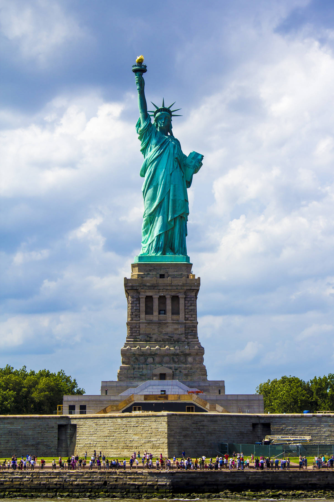
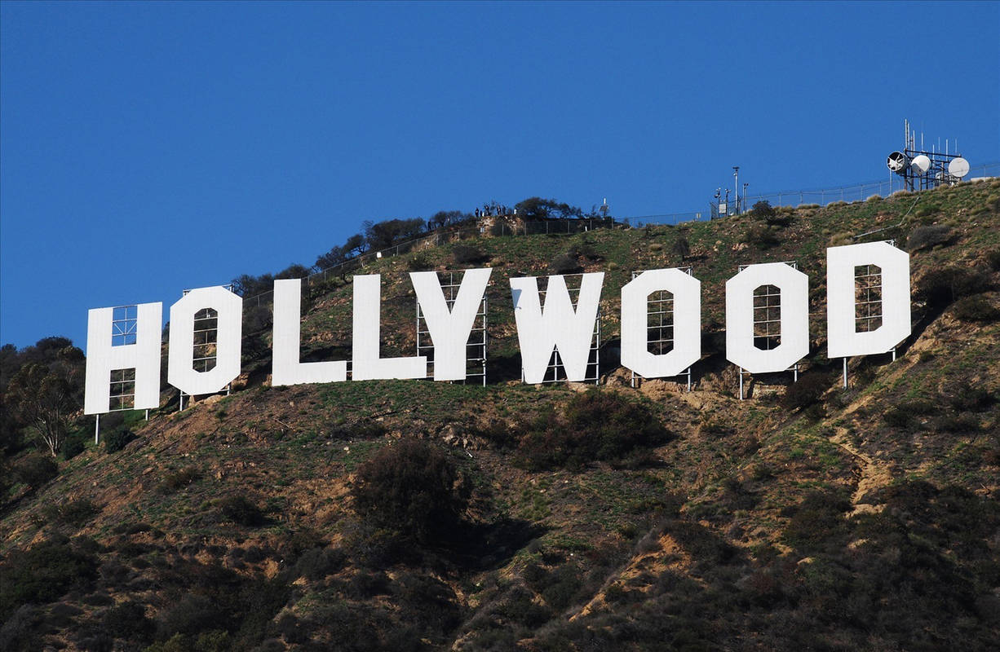
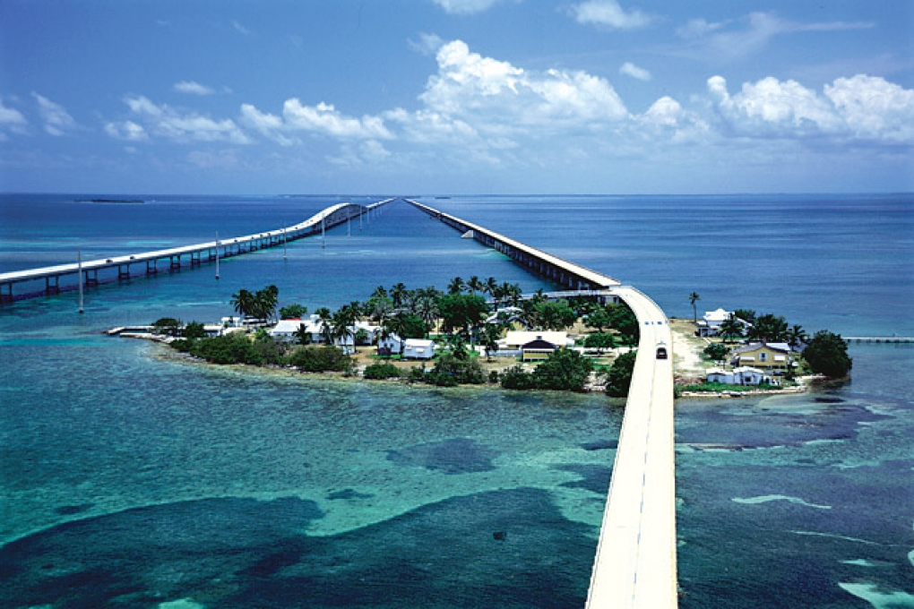
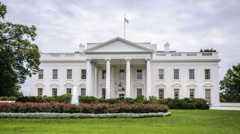
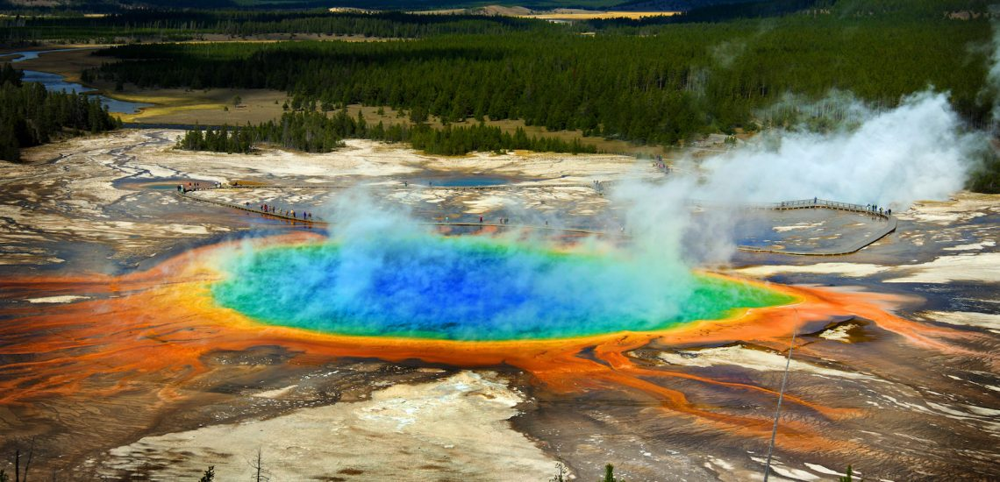

bezienswaardigheden
In Amerika zijn veel bezienswaardigenheden om te bezoeken. Hieronder volgen een paar beroemde bezienswaardigeheden:

-Vrijheidsbeeld; Het vrijheidsbeeld staat in New York en wordt heel veel bezocht, omdat het een hele bekende bezienswaardigheid van Amerika is. Dit beeld staat als symbool voor de vrijheid. -Hollywood; Hollywood is een deel van een stad in de Verenigde Staten. In Hollywood worden vaak Amerikaanse films opgenomen. Er gaan ook veel toeristen naar Hollywood. 
-Grand Canyon; Dit is een kloof in een landschap. Dat is jaren geleden ontstaan en heel bekent, omdat het een mooi gebied is. -Florida Keys; Dit zijn heel veel kleine eilandsjes in Florida. -Witte Huis; In het witte huis woont en werkt de minister president van Amerika. Het duurde lang voordat het was gebouwd. Het witte huis wordt ook op het briefje van 20 dollar afgebeeld. Het is een heel groot huis en er is ook veel toerisme. -Yellowstone; De Yellowstone ligt op een vulkaan. En dat is een van de grootste en gevaarlijkste vulkanen van de wereld. Dit is een veel bezochte bezienswaardigheid door toeristen, omdat het een hele mooie plek is en ook heel bijzonder. |
|
|